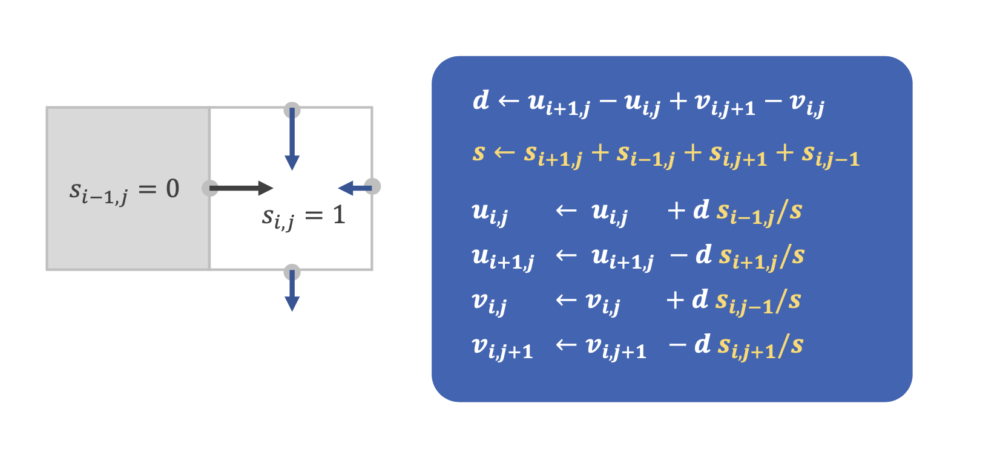
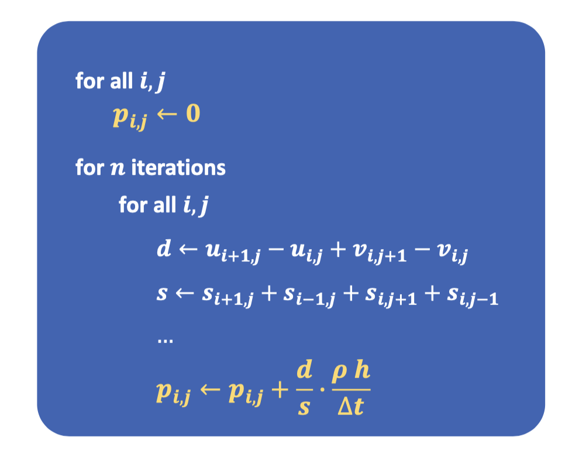
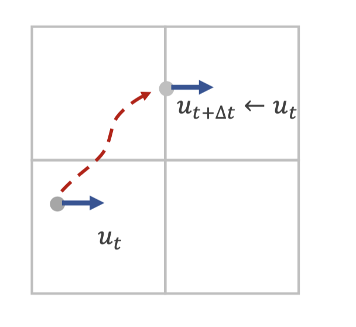

Eulerian Fluid Simulator
Eulerian Fluid Simulators are a type of computational fluid dynamics (CFD) simulation that models fluid behavior by dividing the fluid into a grid of cells. This grid is used to represent the fluid's velocity, pressure, and other properties at each point in space and time. The simulation then solves a set of equations that describe how these properties change over time, allowing the simulation to predict the fluid's behavior under different conditions.
To simulate the fluid we use this algorithm:
- Initialize the velocity field on a staggered grid to represent the fluid's movement in each cell.
- Carefully perform a projection step using Gauss-Seidel method over a number of iterations to solve the linear system of equations (taking walls into account) to ensure incompressibility by setting the velocity divergence to 0.
- Calculate the pressure in each cell using overrelaxation.
- Propagate the velocity field through semi-Lagrangian advection, simulating the transport of fluid properties.
- Advect the compressible dye field to allow for correct visualization.
- Iteratively update the velocity and dye fields to simulate the fluid's behavior over time, allowing for the visualization and analysis.



The key insight here is that the fluid is simulated as incompressible, so the divergence of the velocity field is 0 in each cell, but the dye field, used for visualization purposes, is compressible, and we are plotting its density.